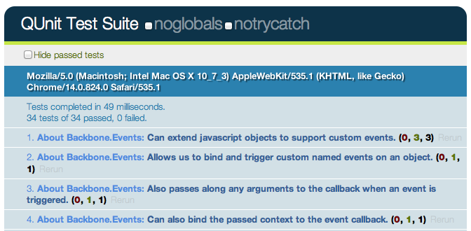
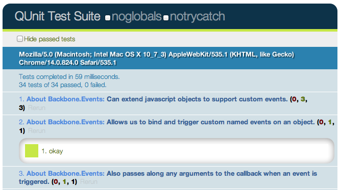
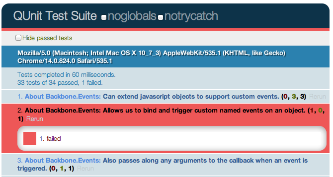

{% include JB/setup %}
{% raw %}
<div>
<div class="book" title="QUnit"><div class="book"><div class="book"><div class="book"><h1 class="title2"><a id="qunit" class="calibre1"></a>QUnit</h1></div></div></div><div class="book" title="Getting Setup"><div class="book"><div class="book"><div class="book"><h2 class="title3"><a id="getting-setup-1" class="calibre1"></a>Getting Setup</h2></div></div></div><p class="calibre6">
      Luckily, getting QUnit setup is a fairly straight-forward process
      that will take less than 5 minutes.
    </p><p class="calibre6">
      We first setup a testing environment composed of three files:
    </p><div class="book"><ul class="itemizedlist"><li class="listitem"><p class="calibre6">
          A HTML <span class="firstname"><strong class="calibre8">structure</strong></span> for
          displaying test results,
        </p></li><li class="listitem"><p class="calibre6">
          The <span class="firstname"><strong class="calibre8">qunit.js</strong></span> file composing
          the testing framework and,
        </p></li><li class="listitem"><p class="calibre6">
          The <span class="firstname"><strong class="calibre8">qunit.css</strong></span> file for
          styling test results.
        </p></li></ul></div><p class="calibre6">
      The latter two of these can be downloaded from the
      <a class="ulink" href="http://qunitjs.com">QUnit website</a>.
    </p><p class="calibre6">
      If you would prefer, you can use a hosted version of the QUnit
      source files for testing purposes. The hosted URLs can be found at
      [http://github.com/jquery/qunit/raw/master/qunit/].
    </p><div class="book" title="Sample HTML with QUnit-compatible markup:"><div class="book"><div class="book"><div class="book"><h3 class="title4"><a id="sample-html-with-qunit-compatible-markup" class="calibre1"></a>Sample HTML with QUnit-compatible markup:</h3></div></div></div><pre class="programlistingjavascript"><code class="cp">&lt;!DOCTYPE html&gt;</code>  
<code class="nt">&lt;html&gt;</code>  
<code class="nt">&lt;head&gt;</code>  
    <code class="nt">&lt;title&gt;</code>QUnit Test Suite<code class="nt">&lt;/title&gt;</code>  

     <code class="nt">&lt;link</code> <code class="na">rel=</code><code class="s">"stylesheet"</code> <code class="na">href=</code><code class="s">"qunit.css"</code><code class="nt">&gt;</code>  
     <code class="nt">&lt;script </code><code class="na">src=</code><code class="s">"qunit.js"</code><code class="nt">&gt;&lt;/script&gt;</code>  

     <code class="c1">&lt;!-- Your application --&gt;</code>  
     <code class="nt">&lt;script </code><code class="na">src=</code><code class="s">"app.js"</code><code class="nt">&gt;&lt;/script&gt;</code>  

     <code class="c1">&lt;!-- Your tests --&gt;</code>  
     <code class="nt">&lt;script </code><code class="na">src=</code><code class="s">"tests.js"</code><code class="nt">&gt;&lt;/script&gt;</code>   
<code class="nt">&lt;/head&gt;</code>  
<code class="nt">&lt;body&gt;</code>  
    <code class="nt">&lt;h1</code> <code class="na">id=</code><code class="s">"qunit-header"</code><code class="nt">&gt;</code>QUnit Test Suite<code class="nt">&lt;/h1&gt;</code>  
    <code class="nt">&lt;h2</code> <code class="na">id=</code><code class="s">"qunit-banner"</code><code class="nt">&gt;&lt;/h2&gt;</code>  
    <code class="nt">&lt;div</code> <code class="na">id=</code><code class="s">"qunit-testrunner-toolbar"</code><code class="nt">&gt;&lt;/div&gt;</code>  
    <code class="nt">&lt;h2</code> <code class="na">id=</code><code class="s">"qunit-userAgent"</code><code class="nt">&gt;&lt;/h2&gt;</code>  
    <code class="nt">&lt;ol</code> <code class="na">id=</code><code class="s">"qunit-tests"</code><code class="nt">&gt;</code>test markup, hidden.<code class="nt">&lt;/ol&gt;</code>  
<code class="nt">&lt;/body&gt;</code>  
<code class="nt">&lt;/html&gt;</code>  
</pre><p class="calibre6">
        Let’s go through the elements above with qunit mentioned in
        their ID. When QUnit is running:
      </p><div class="book"><ul class="itemizedlist"><li class="listitem"><p class="calibre6">
            <span class="firstname"><strong class="calibre8">qunit-header</strong></span> shows the
            name of the test suite
          </p></li><li class="listitem"><p class="calibre6">
            <span class="firstname"><strong class="calibre8">qunit-banner</strong></span> shows up as
            red if a test fails and green if all tests pass
          </p></li><li class="listitem"><p class="calibre6">
            <span class="firstname"><strong class="calibre8">qunit-testrunner-toolbar</strong></span>
            contains additional options for configuring the display of
            tests
          </p></li><li class="listitem"><p class="calibre6">
            <span class="firstname"><strong class="calibre8">qunit-userAgent</strong></span> displays
            the navigator.userAgent property
          </p></li><li class="listitem"><p class="calibre6">
            <span class="firstname"><strong class="calibre8">qunit-tests</strong></span> is a
            container for our test results
          </p></li></ul></div><p class="calibre6">
        When running correctly, the above test runner looks as follows:
      </p><div class="figure"><a id="id2783317" class="firstname"></a><div class="book"><div class="book"></div></div><p class="title6">Figure 5-1. screenshot 1</p></div><p class="calibre6">
        The numbers of the form (a, b, c) after each test name
        correspond to a) failed asserts, b) passed asserts and c) total
        asserts. Clicking on a test name expands it to display all of
        the assertions for that test case. Assertions in green have
        successfully passed.
      </p><div class="figure"><a id="id2783349" class="firstname"></a><div class="book"><div class="book"></div></div><p class="title6">Figure 5-2. screenshot 2</p></div><p class="calibre6">
        If however any tests fail, the test gets highlighted (and the
        qunit-banner at the top switches to red):
      </p><div class="figure"><a id="id2783377" class="firstname"></a><div class="book"><div class="book"></div></div><p class="title6">Figure 5-3. screenshot 3</p></div></div></div><div class="book" title="Assertions"><div class="book"><div class="book"><div class="book"><h2 class="title3"><a id="assertions" class="calibre1"></a>Assertions</h2></div></div></div><p class="calibre6">
      QUnit supports a number of basic
      <span class="firstname"><strong class="calibre8">assertions</strong></span>, which are used in
      testing to verify that the result being returned by our code is
      what we expect. If an assertion fails, we know that a bug
      exists.Similar to Jasmine, QUnit can be used to easily test for
      regressions. Specifically, when a bug is found one can write an
      assertion to test the existence of the bug, write a patch and then
      commit both. If subsequent changes to the code break the test
      you’ll know what was responsible and be able to address it more
      easily.
    </p><p class="calibre6">
      Some of the supported QUnit assertions we’re going to look at
      first are:
    </p><div class="book"><ul class="itemizedlist"><li class="listitem"><p class="calibre6">
          <code class="literal">ok ( state, message )</code> - passes if the first
          argument is truthy
        </p></li><li class="listitem"><p class="calibre6">
          <code class="literal">equal ( actual, expected, message )</code> - a
          simple comparison assertion with type coercion
        </p></li><li class="listitem"><p class="calibre6">
          <code class="literal">notEqual ( actual, expected, message )</code> -
          the opposite of the above
        </p></li><li class="listitem"><p class="calibre6">
          <code class="literal">expect( amount )</code> - the number of assertions
          expected to run within each test
        </p></li><li class="listitem"><p class="calibre6">
          <code class="literal">strictEqual( actual, expected, message)</code> -
          offers a much stricter comparison than
          <code class="literal">equal()</code> and is considered the preferred
          method of checking equality as it avoids stumbling on subtle
          coercion bugs
        </p></li><li class="listitem"><p class="calibre6">
          <code class="literal">deepEqual( actual, expected, message )</code> -
          similar to <code class="literal">strictEqual</code>, comparing the
          contents (with <code class="literal">===</code>) of the given objects,
          arrays and primitives.
        </p></li></ul></div><p class="calibre6">
      Creating new test cases with QUnit is relatively straight-forward
      and can be done using <code class="literal">test()</code>, which constructs
      a test where the first argument is the <code class="literal">name</code> of
      the test to be displayed in our results and the second is a
      <code class="literal">callback</code> function containing all of our
      assertions. This is called as soon as QUnit is running.
    </p><div class="book" title="Basic test case using test( name, callback ):"><div class="book"><div class="book"><div class="book"><h3 class="title4"><a id="basic-test-case-using-test-name-callback" class="calibre1"></a>Basic test case using test( name, callback ):</h3></div></div></div><pre class="programlistingjavascript"><code class="kd">var</code> <code class="nx">myString</code> <code class="o">=</code> <code class="s">'Hello Backbone.js'</code><code class="p">;</code>

<code class="nx">test</code><code class="p">(</code> <code class="s">'Our first QUnit test - asserting results'</code><code class="p">,</code> <code class="kd">function</code><code class="p">(){</code>

    <code class="c">// ok( boolean, message )</code>
    <code class="nx">ok</code><code class="p">(</code> <code class="kd">true</code><code class="p">,</code> <code class="s">'the test succeeds'</code><code class="p">);</code>
    <code class="nx">ok</code><code class="p">(</code> <code class="kd">false</code><code class="p">,</code> <code class="s">'the test fails'</code><code class="p">);</code>

    <code class="c">// equal( actualValue, expectedValue, message )</code>
    <code class="nx">equal</code><code class="p">(</code> <code class="nx">myString</code><code class="p">,</code> <code class="s">'Hello Backbone.js'</code><code class="p">,</code> <code class="s">'The value expected is Hello Backbone.js!'</code><code class="p">);</code>
<code class="p">});</code>
</pre><p class="calibre6">
        What we’re doing in the above is defining a variable with a
        specific value and then testing to ensure the value was what we
        expected it to be. This was done using the comparison assertion,
        <code class="literal">equal()</code>, which expects its first argument to
        be a value being tested and the second argument to be the
        expected value. We also used <code class="literal">ok()</code>, which
        allows us to easily test against functions or variables that
        evaluate to booleans.
      </p><p class="calibre6">
        Note: Optionally in our test case, we could have passed an
        <span class="firstname">“<span class="firstname">expected</span>”</span> value to <code class="literal">test()</code>
        defining the number of assertions we expect to run. This takes
        the form: <code class="literal">test( name, [expected], test );</code> or
        by manually settings the expectation at the top of the test
        function, like so: <code class="literal">expect( 1 )</code>. I recommend
        you to make it a habit and always define how many assertions you
        expect. More on this later.
      </p><p class="calibre6">
        As testing a simple static variable is fairly trivial, we can
        take this further to test actual functions. In the following
        example we test the output of a function that reverses a string
        to ensure that the output is correct using
        <code class="literal">equal()</code> and <code class="literal">notEqual()</code>:
      </p></div><div class="book" title="Comparing the actual output of a function against the expected output:"><div class="book"><div class="book"><div class="book"><h3 class="title4"><a id="comparing-the-actual-output-of-a-function-against-the-expected-output" class="calibre1"></a>Comparing the actual output of a function against the
      expected output:</h3></div></div></div><pre class="programlistingjavascript"><code class="kd">function</code> <code class="nx">reverseString</code><code class="p">(</code> <code class="nx">str</code> <code class="p">){</code>
    <code class="kd">return</code> <code class="nx">str</code><code class="p">.</code><code class="nx">split</code><code class="p">(</code><code class="s">""</code><code class="p">).</code><code class="nx">reverse</code><code class="p">().</code><code class="nx">join</code><code class="p">(</code><code class="s">""</code><code class="p">);</code>
<code class="p">}</code>

<code class="nx">test</code><code class="p">(</code> <code class="s">'reverseString()'</code><code class="p">,</code> <code class="kd">function</code><code class="p">()</code> <code class="p">{</code> 
    <code class="nx">expect</code><code class="p">(</code> <code class="mi">5</code> <code class="p">);</code>
    <code class="nx">equal</code><code class="p">(</code> <code class="nx">reverseString</code><code class="p">(</code><code class="s">'hello'</code><code class="p">),</code> <code class="s">'olleh'</code><code class="p">,</code> <code class="s">'The value expected was olleh'</code> <code class="p">);</code> 
    <code class="nx">equal</code><code class="p">(</code> <code class="nx">reverseString</code><code class="p">(</code><code class="s">'foobar'</code><code class="p">),</code> <code class="s">'raboof'</code><code class="p">,</code> <code class="s">'The value expected was raboof'</code> <code class="p">);</code> 
    <code class="nx">equal</code><code class="p">(</code> <code class="nx">reverseString</code><code class="p">(</code><code class="s">'world'</code><code class="p">),</code> <code class="s">'dlrow'</code><code class="p">,</code> <code class="s">'The value expected was dlrow'</code> <code class="p">);</code> 
    <code class="nx">notEqual</code><code class="p">(</code> <code class="nx">reverseString</code><code class="p">(</code><code class="s">'world'</code><code class="p">),</code> <code class="s">'dlroo'</code><code class="p">,</code> <code class="s">'The value was expected to not be dlroo'</code> <code class="p">);</code> 
    <code class="nx">equal</code><code class="p">(</code> <code class="nx">reverseString</code><code class="p">(</code><code class="s">'bubble'</code><code class="p">),</code> <code class="s">'double'</code><code class="p">,</code> <code class="s">'The value expected was elbbub'</code> <code class="p">);</code> 
<code class="p">})</code>  
</pre><p class="calibre6">
        Running these tests in the QUnit test runner (which you would
        see when your HTML test page was loaded) we would find that four
        of the assertions pass whilst the last one does not. The reason
        the test against <code class="literal">'double'</code> fails is because it
        was purposefully written incorrectly. In your own projects if a
        test fails to pass and your assertions are correct, you’ve
        probably just found a bug!
      </p></div></div><div class="book" title="Adding structure to assertions"><div class="book"><div class="book"><div class="book"><h2 class="title3"><a id="adding-structure-to-assertions" class="calibre1"></a>Adding structure to assertions</h2></div></div></div><p class="calibre6">
      Housing all of our assertions in one test case can quickly become
      difficult to maintain, but luckily QUnit supports structuring
      blocks of assertions more cleanly. This can be done using
      <code class="literal">module()</code> - a method that allows us to easily
      group tests together. A typical approach to grouping might be
      keeping multiple tests testing a specific method as part of the
      same group (module).
    </p><div class="book" title="Basic QUnit Modules:"><div class="book"><div class="book"><div class="book"><h3 class="title4"><a id="basic-qunit-modules" class="calibre1"></a>Basic QUnit Modules:</h3></div></div></div><pre class="programlistingjavascript"><code class="nx">module</code><code class="p">(</code> <code class="s">'Module One'</code> <code class="p">);</code>  
<code class="nx">test</code><code class="p">(</code> <code class="s">'first test'</code><code class="p">,</code> <code class="kd">function</code><code class="p">()</code> <code class="p">{}</code> <code class="p">);</code>  
<code class="nx">test</code><code class="p">(</code> <code class="s">'another test'</code><code class="p">,</code> <code class="kd">function</code><code class="p">()</code> <code class="p">{}</code> <code class="p">);</code>  

<code class="nx">module</code><code class="p">(</code> <code class="s">'Module Two'</code> <code class="p">);</code>  
<code class="nx">test</code><code class="p">(</code> <code class="s">'second test'</code><code class="p">,</code> <code class="kd">function</code><code class="p">()</code> <code class="p">{}</code> <code class="p">);</code>  
<code class="nx">test</code><code class="p">(</code> <code class="s">'another test'</code><code class="p">,</code> <code class="kd">function</code><code class="p">()</code> <code class="p">{}</code> <code class="p">);</code>  

<code class="nx">module</code><code class="p">(</code> <code class="s">'Module Three'</code> <code class="p">);</code>  
<code class="nx">test</code><code class="p">(</code> <code class="s">'third test'</code><code class="p">,</code> <code class="kd">function</code><code class="p">()</code> <code class="p">{}</code> <code class="p">);</code>  
<code class="nx">test</code><code class="p">(</code> <code class="s">'another test'</code><code class="p">,</code> <code class="kd">function</code><code class="p">()</code> <code class="p">{}</code> <code class="p">);</code>  
</pre><p class="calibre6">
        We can take this further by introducing
        <code class="literal">setup()</code> and <code class="literal">teardown()</code>
        callbacks to our modules, where <code class="literal">setup()</code> is
        run before each test whilst <code class="literal">teardown()</code> is run
        after each test.
      </p></div><div class="book" title="Using setup() and teardown() :"><div class="book"><div class="book"><div class="book"><h3 class="title4"><a id="using-setup-and-teardown" class="calibre1"></a>Using setup() and teardown() :</h3></div></div></div><pre class="programlistingjavascript"><code class="nx">module</code><code class="p">(</code> <code class="s">"Module One"</code><code class="p">,</code> <code class="p">{</code>
    <code class="nx">setup</code><code class="o">:</code> <code class="kd">function</code><code class="p">()</code> <code class="p">{</code>
        <code class="c">// run before</code>
    <code class="p">},</code>
    <code class="nx">teardown</code><code class="o">:</code> <code class="kd">function</code><code class="p">()</code> <code class="p">{</code>
        <code class="c">// run after</code>
    <code class="p">}</code>
<code class="p">});</code>

<code class="nx">test</code><code class="p">(</code><code class="s">"first test"</code><code class="p">,</code> <code class="kd">function</code><code class="p">()</code> <code class="p">{</code>
    <code class="c">// run the first test</code>
<code class="p">});</code>
</pre><p class="calibre6">
        These callbacks can be used to define (or clear) any components
        we wish to instantiate for use in one or more of our tests. As
        we’ll see shortly, this is ideal for defining new instances of
        views, collections, models or routers from a project that we can
        then reference across multiple tests.
      </p></div><div class="book" title="Using setup() and teardown() for instantiation and clean-up:"><div class="book"><div class="book"><div class="book"><h3 class="title4"><a id="using-setup-and-teardown-for-instantiation-and-clean-up" class="calibre1"></a>Using setup() and teardown() for instantiation and
      clean-up:</h3></div></div></div><pre class="programlistingjavascript"><code class="c">// Define a simple model and collection modeling a store and</code>
<code class="c">// list of stores</code>

<code class="kd">var</code> <code class="nx">Store</code> <code class="o">=</code> <code class="nx">Backbone</code><code class="p">.</code><code class="nx">Model</code><code class="p">.</code><code class="nx">extend</code><code class="p">({});</code>

<code class="kd">var</code> <code class="nx">StoreList</code> <code class="o">=</code> <code class="nx">Backbone</code><code class="p">.</code><code class="nx">Collection</code><code class="p">.</code><code class="nx">extend</code><code class="p">({</code>
    <code class="nx">model</code><code class="o">:</code> <code class="nx">store</code><code class="p">,</code>
    <code class="nx">comparator</code><code class="o">:</code> <code class="kd">function</code><code class="p">(</code> <code class="nx">store</code> <code class="p">)</code> <code class="p">{</code> <code class="kd">return</code> <code class="nx">store</code><code class="p">.</code><code class="nx">get</code><code class="p">(</code><code class="s">'name'</code><code class="p">)</code> <code class="p">}</code>
<code class="p">});</code>

<code class="c">// Define a group for our tests</code>
<code class="nx">module</code><code class="p">(</code> <code class="s">"StoreList sanity check"</code><code class="p">,</code> <code class="p">{</code>
    <code class="nx">setup</code><code class="o">:</code> <code class="kd">function</code><code class="p">()</code> <code class="p">{</code>
        <code class="kd">this</code><code class="p">.</code><code class="nx">list</code> <code class="o">=</code> <code class="kd">new</code> <code class="nx">StoreList</code><code class="p">;</code>
        <code class="kd">this</code><code class="p">.</code><code class="nx">list</code><code class="p">.</code><code class="nx">add</code><code class="p">(</code><code class="kd">new</code> <code class="nx">Store</code><code class="p">({</code> <code class="nx">name</code><code class="o">:</code> <code class="s">"Costcutter"</code> <code class="p">}));</code>
        <code class="kd">this</code><code class="p">.</code><code class="nx">list</code><code class="p">.</code><code class="nx">add</code><code class="p">(</code><code class="kd">new</code> <code class="nx">Store</code><code class="p">({</code> <code class="nx">name</code><code class="o">:</code> <code class="s">"Target"</code> <code class="p">}));</code>
        <code class="kd">this</code><code class="p">.</code><code class="nx">list</code><code class="p">.</code><code class="nx">add</code><code class="p">(</code><code class="kd">new</code> <code class="nx">Store</code><code class="p">({</code> <code class="nx">name</code><code class="o">:</code> <code class="s">"Walmart"</code> <code class="p">}));</code>
        <code class="kd">this</code><code class="p">.</code><code class="nx">list</code><code class="p">.</code><code class="nx">add</code><code class="p">(</code><code class="kd">new</code> <code class="nx">Store</code><code class="p">({</code> <code class="nx">name</code><code class="o">:</code> <code class="s">"Barnes &amp; Noble"</code> <code class="p">});</code>
    <code class="p">},</code>
    <code class="nx">teardown</code><code class="o">:</code> <code class="kd">function</code><code class="p">()</code> <code class="p">{</code>
        <code class="nb">window</code><code class="p">.</code><code class="nx">errors</code> <code class="o">=</code> <code class="kd">null</code><code class="p">;</code>
    <code class="p">}</code>
<code class="p">});</code>

<code class="c">// Test the order of items added</code>
<code class="nx">test</code><code class="p">(</code> <code class="s">"test ordering"</code><code class="p">,</code> <code class="kd">function</code><code class="p">()</code> <code class="p">{</code>
    <code class="nx">expect</code><code class="p">(</code> <code class="mi">1</code> <code class="p">);</code>
    <code class="kd">var</code> <code class="nx">expected</code> <code class="o">=</code> <code class="p">[</code><code class="s">"Barnes &amp; Noble"</code><code class="p">,</code> <code class="s">"Costcutter"</code><code class="p">,</code> <code class="s">"Target"</code><code class="p">,</code> <code class="s">"Walmart"</code><code class="p">];</code>
    <code class="kd">var</code> <code class="nx">actual</code> <code class="o">=</code> <code class="kd">this</code><code class="p">.</code><code class="nx">list</code><code class="p">.</code><code class="nx">pluck</code><code class="p">(</code><code class="s">"name"</code><code class="p">);</code>
    <code class="nx">deepEqual</code><code class="p">(</code> <code class="nx">actual</code><code class="p">,</code> <code class="nx">expected</code><code class="p">,</code> <code class="s">"is maintained by comparator"</code> <code class="p">);</code>
<code class="p">});</code>
</pre><p class="calibre6">
        Here, a list of stores is created and stored on
        <code class="literal">setup()</code>. A <code class="literal">teardown()</code>
        callback is used to simply clear our a list of errors we might
        be storing within the window scope, but is otherwise not needed.
      </p></div></div><div class="book" title="Assertion examples"><div class="book"><div class="book"><div class="book"><h2 class="title3"><a id="assertion-examples" class="calibre1"></a>Assertion examples</h2></div></div></div><p class="calibre6">
      Before we continue any further, let’s review some more examples of
      how QUnits various assertions can be correctly used when writing
      tests:
    </p><div class="book" title="equal - a comparison assertion. It passes if actual == expected"><div class="book"><div class="book"><div class="book"><h3 class="title4"><a id="equal---a-comparison-assertion.-it-passes-if-actual-expected" class="calibre1"></a>equal - a comparison assertion. It passes if actual ==
      expected</h3></div></div></div><pre class="programlistingjavascript"><code class="nx">test</code><code class="p">(</code> <code class="s">"equal"</code><code class="p">,</code> <code class="mi">2</code><code class="p">,</code> <code class="kd">function</code><code class="p">()</code> <code class="p">{</code>
  <code class="kd">var</code> <code class="nx">actual</code> <code class="o">=</code> <code class="mi">6</code> <code class="o">-</code> <code class="mi">5</code><code class="p">;</code>
  <code class="nx">equal</code><code class="p">(</code> <code class="nx">actual</code><code class="p">,</code> <code class="kd">true</code><code class="p">,</code>  <code class="s">"passes as 1 == true"</code> <code class="p">);</code>
  <code class="nx">equal</code><code class="p">(</code> <code class="nx">actual</code><code class="p">,</code> <code class="mi">1</code><code class="p">,</code>     <code class="s">"passes as 1 == 1"</code> <code class="p">);</code>
<code class="p">});</code>
</pre></div><div class="book" title="notEqual - a comparison assertion. It passes if actual != expected"><div class="book"><div class="book"><div class="book"><h3 class="title4"><a id="notequal---a-comparison-assertion.-it-passes-if-actual-expected" class="calibre1"></a>notEqual - a comparison assertion. It passes if actual !=
      expected</h3></div></div></div><pre class="programlistingjavascript"><code class="nx">test</code><code class="p">(</code> <code class="s">"notEqual"</code><code class="p">,</code> <code class="mi">2</code><code class="p">,</code> <code class="kd">function</code><code class="p">()</code> <code class="p">{</code>
  <code class="kd">var</code> <code class="nx">actual</code> <code class="o">=</code> <code class="mi">6</code> <code class="o">-</code> <code class="mi">5</code><code class="p">;</code>
  <code class="nx">notEqual</code><code class="p">(</code> <code class="nx">actual</code><code class="p">,</code> <code class="kd">false</code><code class="p">,</code> <code class="s">"passes as 1 != false"</code> <code class="p">);</code>
  <code class="nx">notEqual</code><code class="p">(</code> <code class="nx">actual</code><code class="p">,</code> <code class="mi">0</code><code class="p">,</code>     <code class="s">"passes as 1 != 0"</code> <code class="p">);</code>
<code class="p">});</code>
</pre></div><div class="book" title="strictEqual - a comparison assertion. It passes if actual === expected."><div class="book"><div class="book"><div class="book"><h3 class="title4"><a id="strictequal---a-comparison-assertion.-it-passes-if-actual-expected." class="calibre1"></a>strictEqual - a comparison assertion. It passes if actual
      === expected.</h3></div></div></div><pre class="programlistingjavascript"><code class="nx">test</code><code class="p">(</code> <code class="s">"strictEqual"</code><code class="p">,</code> <code class="mi">2</code><code class="p">,</code> <code class="kd">function</code><code class="p">()</code> <code class="p">{</code>
  <code class="kd">var</code> <code class="nx">actual</code> <code class="o">=</code> <code class="mi">6</code> <code class="o">-</code> <code class="mi">5</code><code class="p">;</code>
  <code class="nx">strictEqual</code><code class="p">(</code> <code class="nx">actual</code><code class="p">,</code> <code class="kd">true</code><code class="p">,</code>  <code class="s">"fails as 1 !== true"</code> <code class="p">);</code>
  <code class="nx">strictEqual</code><code class="p">(</code> <code class="nx">actual</code><code class="p">,</code> <code class="mi">1</code><code class="p">,</code>     <code class="s">"passes as 1 === 1"</code> <code class="p">);</code>
<code class="p">});</code>
</pre></div><div class="book" title="notStrictEqual - a comparison assertion. It passes if actual !== expected."><div class="book"><div class="book"><div class="book"><h3 class="title4"><a id="notstrictequal---a-comparison-assertion.-it-passes-if-actual-expected." class="calibre1"></a>notStrictEqual - a comparison assertion. It passes if
      actual !== expected.</h3></div></div></div><pre class="programlistingjavascript"><code class="nx">test</code><code class="p">(</code><code class="s">"notStrictEqual"</code><code class="p">,</code> <code class="mi">2</code><code class="p">,</code> <code class="kd">function</code><code class="p">()</code> <code class="p">{</code>
  <code class="kd">var</code> <code class="nx">actual</code> <code class="o">=</code> <code class="mi">6</code> <code class="o">-</code> <code class="mi">5</code><code class="p">;</code>
  <code class="nx">notStrictEqual</code><code class="p">(</code> <code class="nx">actual</code><code class="p">,</code> <code class="kd">true</code><code class="p">,</code>  <code class="s">"passes as 1 !== true"</code> <code class="p">);</code>
  <code class="nx">notStrictEqual</code><code class="p">(</code> <code class="nx">actual</code><code class="p">,</code> <code class="mi">1</code><code class="p">,</code>     <code class="s">"fails as 1 === 1"</code> <code class="p">);</code>
<code class="p">});</code>
</pre></div><div class="book" title="deepEqual - a recursive comparison assertion. Unlike strictEqual(), it works on objects, arrays and primitives."><div class="book"><div class="book"><div class="book"><h3 class="title4"><a id="deepequal---a-recursive-comparison-assertion.-unlike-strictequal-it-works-on-objects-arrays-and-primitives." class="calibre1"></a>deepEqual - a recursive comparison assertion. Unlike
      strictEqual(), it works on objects, arrays and primitives.</h3></div></div></div><pre class="programlistingjavascript"><code class="nx">test</code><code class="p">(</code><code class="s">"deepEqual"</code><code class="p">,</code> <code class="mi">4</code><code class="p">,</code> <code class="kd">function</code><code class="p">()</code> <code class="p">{</code>
  <code class="kd">var</code> <code class="nx">actual</code> <code class="o">=</code> <code class="p">{</code><code class="nx">q</code><code class="o">:</code> <code class="s">'foo'</code><code class="p">,</code> <code class="nx">t</code><code class="o">:</code> <code class="s">'bar'</code><code class="p">};</code>
  <code class="kd">var</code> <code class="nx">el</code> <code class="o">=</code>  <code class="nx">$</code><code class="p">(</code><code class="s">'div'</code><code class="p">);</code>
  <code class="kd">var</code> <code class="nx">children</code> <code class="o">=</code> <code class="nx">$</code><code class="p">(</code><code class="s">'div'</code><code class="p">).</code><code class="nx">children</code><code class="p">();</code>

  <code class="nx">equal</code><code class="p">(</code> <code class="nx">actual</code><code class="p">,</code> <code class="p">{</code><code class="nx">q</code><code class="o">:</code> <code class="s">'foo'</code><code class="p">,</code> <code class="nx">t</code><code class="o">:</code> <code class="s">'bar'</code><code class="p">},</code>   <code class="s">"fails - objects are not equal using equal()"</code> <code class="p">);</code>
  <code class="nx">deepEqual</code><code class="p">(</code> <code class="nx">actual</code><code class="p">,</code> <code class="p">{</code><code class="nx">q</code><code class="o">:</code> <code class="s">'foo'</code><code class="p">,</code> <code class="nx">t</code><code class="o">:</code> <code class="s">'bar'</code><code class="p">},</code>   <code class="s">"passes - objects are equal"</code> <code class="p">);</code>
  <code class="nx">equal</code><code class="p">(</code> <code class="nx">el</code><code class="p">,</code> <code class="nx">children</code><code class="p">,</code> <code class="s">"fails - jQuery objects are not the same"</code> <code class="p">);</code>
  <code class="nx">deepEqual</code><code class="p">(</code><code class="nx">el</code><code class="p">,</code> <code class="nx">children</code><code class="p">,</code> <code class="s">"fails - objects not equivalent"</code> <code class="p">);</code>

<code class="p">});</code>
</pre></div><div class="book" title="notDeepEqual - a comparison assertion. This returns the opposite of deepEqual"><div class="book"><div class="book"><div class="book"><h3 class="title4"><a id="notdeepequal---a-comparison-assertion.-this-returns-the-opposite-of-deepequal" class="calibre1"></a>notDeepEqual - a comparison assertion. This returns the
      opposite of deepEqual</h3></div></div></div><pre class="programlistingjavascript"><code class="nx">test</code><code class="p">(</code><code class="s">"notDeepEqual"</code><code class="p">,</code> <code class="mi">2</code><code class="p">,</code> <code class="kd">function</code><code class="p">()</code> <code class="p">{</code>
  <code class="kd">var</code> <code class="nx">actual</code> <code class="o">=</code> <code class="p">{</code><code class="nx">q</code><code class="o">:</code> <code class="s">'foo'</code><code class="p">,</code> <code class="nx">t</code><code class="o">:</code> <code class="s">'bar'</code><code class="p">};</code>
  <code class="nx">notEqual</code><code class="p">(</code> <code class="nx">actual</code><code class="p">,</code> <code class="p">{</code><code class="nx">q</code><code class="o">:</code> <code class="s">'foo'</code><code class="p">,</code> <code class="nx">t</code><code class="o">:</code> <code class="s">'bar'</code><code class="p">},</code>   <code class="s">"passes - objects are not equal"</code> <code class="p">);</code>
  <code class="nx">notDeepEqual</code><code class="p">(</code> <code class="nx">actual</code><code class="p">,</code> <code class="p">{</code><code class="nx">q</code><code class="o">:</code> <code class="s">'foo'</code><code class="p">,</code> <code class="nx">t</code><code class="o">:</code> <code class="s">'bar'</code><code class="p">},</code>   <code class="s">"fails - objects are equivalent"</code> <code class="p">);</code>
<code class="p">});</code>
</pre></div><div class="book" title="raises - an assertion which tests if a callback throws any exceptions"><div class="book"><div class="book"><div class="book"><h3 class="title4"><a id="raises---an-assertion-which-tests-if-a-callback-throws-any-exceptions" class="calibre1"></a>raises - an assertion which tests if a callback throws any
      exceptions</h3></div></div></div><pre class="programlistingjavascript"><code class="nx">test</code><code class="p">(</code><code class="s">"raises"</code><code class="p">,</code> <code class="mi">1</code><code class="p">,</code> <code class="kd">function</code><code class="p">()</code> <code class="p">{</code>
  <code class="nx">raises</code><code class="p">(</code><code class="kd">function</code><code class="p">()</code> <code class="p">{</code>
    <code class="kd">throw</code> <code class="kd">new</code> <code class="nb">Error</code><code class="p">(</code> <code class="s">"Oh no! It's an error!"</code> <code class="p">);</code>
  <code class="p">},</code> <code class="s">"passes - an error was thrown inside our callback"</code><code class="p">);</code>
<code class="p">});</code>
</pre></div></div><div class="book" title="Fixtures"><div class="book"><div class="book"><div class="book"><h2 class="title3"><a id="fixtures" class="calibre1"></a>Fixtures</h2></div></div></div><p class="calibre6">
      From time to time we may need to write tests that modify the DOM.
      Managing the clean-up of such operations between tests can be a
      genuine pain, but thankfully QUnit has a solution to this problem
      in the form of the <code class="literal">#qunit-fixture</code> element, seen
      below.
    </p><div class="book" title="Fixture markup:"><div class="book"><div class="book"><div class="book"><h3 class="title4"><a id="fixture-markup" class="calibre1"></a>Fixture markup:</h3></div></div></div><pre class="programlistingjavascript"><code class="cp">&lt;!DOCTYPE html&gt;</code>
<code class="nt">&lt;html&gt;</code>
<code class="nt">&lt;head&gt;</code>
    <code class="nt">&lt;title&gt;</code>QUnit Test<code class="nt">&lt;/title&gt;</code>
    <code class="nt">&lt;link</code> <code class="na">rel=</code><code class="s">"stylesheet"</code> <code class="na">href=</code><code class="s">"qunit.css"</code><code class="nt">&gt;</code>
    <code class="nt">&lt;script </code><code class="na">src=</code><code class="s">"qunit.js"</code><code class="nt">&gt;&lt;/script&gt;</code>
    <code class="nt">&lt;script </code><code class="na">src=</code><code class="s">"app.js"</code><code class="nt">&gt;&lt;/script&gt;</code>
    <code class="nt">&lt;script </code><code class="na">src=</code><code class="s">"tests.js"</code><code class="nt">&gt;&lt;/script&gt;</code>
<code class="nt">&lt;/head&gt;</code>
<code class="nt">&lt;body&gt;</code>
    <code class="nt">&lt;h1</code> <code class="na">id=</code><code class="s">"qunit-header"</code><code class="nt">&gt;</code>QUnit Test<code class="nt">&lt;/h1&gt;</code>
    <code class="nt">&lt;h2</code> <code class="na">id=</code><code class="s">"qunit-banner"</code><code class="nt">&gt;&lt;/h2&gt;</code>
    <code class="nt">&lt;div</code> <code class="na">id=</code><code class="s">"qunit-testrunner-toolbar"</code><code class="nt">&gt;&lt;/div&gt;</code>
    <code class="nt">&lt;h2</code> <code class="na">id=</code><code class="s">"qunit-userAgent"</code><code class="nt">&gt;&lt;/h2&gt;</code>
    <code class="nt">&lt;ol</code> <code class="na">id=</code><code class="s">"qunit-tests"</code><code class="nt">&gt;&lt;/ol&gt;</code>
    <code class="nt">&lt;div</code> <code class="na">id=</code><code class="s">"qunit-fixture"</code><code class="nt">&gt;&lt;/div&gt;</code>
<code class="nt">&lt;/body&gt;</code>
<code class="nt">&lt;/html&gt;</code>
</pre><p class="calibre6">
        We can either opt to place static markup in the fixture or just
        insert/append any DOM elements we may need to it. QUnit will
        automatically reset the <code class="literal">innerHTML</code> of the
        fixture after each test to its original value. In case you’re
        using jQuery, it’s useful to know that QUnit checks for its
        availability and will opt to use <code class="literal">$(el).html()</code>
        instead, which will cleanup any jQuery event handlers too.
      </p></div><div class="book" title="Fixtures example:"><div class="book"><div class="book"><div class="book"><h3 class="title4"><a id="fixtures-example" class="calibre1"></a>Fixtures example:</h3></div></div></div><p class="calibre6">
        Let us now go through a more complete example of using fixtures.
        One thing that most of us are used to doing in jQuery is working
        with lists - they’re often used to define the markup for menus,
        grids and a number of other components. You may have used jQuery
        plugins before that manipulated a given list in a particular way
        and it can be useful to test that the final (manipulated) output
        of the plugin is what was expected.
      </p><p class="calibre6">
        For the purposes of our next example, we’re going to use Ben
        Alman’s <code class="literal">$.enumerate()</code> plugin, which can
        prepend each item in a list by its index, optionally allowing us
        to set what the first number in the list is. The code snippet
        for the plugin can be found below, followed by an example of the
        output is generates:
      </p><pre class="programlistingjavascript"><code class="nx">$</code><code class="p">.</code><code class="nx">fn</code><code class="p">.</code><code class="nx">enumerate</code> <code class="o">=</code> <code class="kd">function</code><code class="p">(</code> <code class="nx">start</code> <code class="p">)</code> <code class="p">{</code>
      <code class="kd">if</code> <code class="p">(</code> <code class="kd">typeof</code> <code class="nx">start</code> <code class="o">!==</code> <code class="s">"undefined"</code> <code class="p">)</code> <code class="p">{</code>
        <code class="c">// Since `start` value was provided, enumerate and return</code>
        <code class="c">// the initial jQuery object to allow chaining.</code>

        <code class="kd">return</code> <code class="kd">this</code><code class="p">.</code><code class="nx">each</code><code class="p">(</code><code class="kd">function</code><code class="p">(</code><code class="nx">i</code><code class="p">){</code>
          <code class="nx">$</code><code class="p">(</code><code class="kd">this</code><code class="p">).</code><code class="nx">prepend</code><code class="p">(</code> <code class="s">"&lt;b&gt;"</code> <code class="o">+</code> <code class="p">(</code> <code class="nx">i</code> <code class="o">+</code> <code class="nx">start</code> <code class="p">)</code> <code class="o">+</code> <code class="s">"&lt;/b&gt; "</code> <code class="p">);</code>
        <code class="p">});</code>

      <code class="p">}</code> <code class="kd">else</code> <code class="p">{</code>
        <code class="c">// Since no `start` value was provided, function as a</code>
        <code class="c">// getter, returing the appropriate value from the first</code>
        <code class="c">// selected element.</code>

        <code class="kd">var</code> <code class="nx">val</code> <code class="o">=</code> <code class="kd">this</code><code class="p">.</code><code class="nx">eq</code><code class="p">(</code> <code class="mi">0</code> <code class="p">).</code><code class="nx">children</code><code class="p">(</code> <code class="s">"b"</code> <code class="p">).</code><code class="nx">eq</code><code class="p">(</code> <code class="mi">0</code> <code class="p">).</code><code class="nx">text</code><code class="p">();</code>
        <code class="kd">return</code> <code class="nb">Number</code><code class="p">(</code> <code class="nx">val</code> <code class="p">);</code>
      <code class="p">}</code>
    <code class="p">};</code>

<code class="c">/*</code>
<code class="c">    &lt;ul&gt;</code>
<code class="c">      &lt;li&gt;1. hello&lt;/li&gt;</code>
<code class="c">      &lt;li&gt;2. world&lt;/li&gt;</code>
<code class="c">      &lt;li&gt;3. i&lt;/li&gt;</code>
<code class="c">      &lt;li&gt;4. am&lt;/li&gt;</code>
<code class="c">      &lt;li&gt;5. foo&lt;/li&gt;</code>
<code class="c">    &lt;/ul&gt;</code>
<code class="c">*/</code>
</pre><p class="calibre6">
        Let’s now write some specs for the plugin. First, we define the
        markup for a list containing some sample items inside our
        <code class="literal">qunit-fixture</code> element:
      </p><pre class="programlistingjavascript"><code class="ni">&amp;lt;</code>div id=<code class="ni">&amp;quot;</code>qunit-fixture<code class="ni">&amp;quot;&amp;gt;</code>
    <code class="ni">&amp;lt;</code>ul<code class="ni">&amp;gt;</code>
      <code class="ni">&amp;lt;</code>li<code class="ni">&amp;gt;</code>hello<code class="ni">&amp;lt;</code>/li<code class="ni">&amp;gt;</code>
      <code class="ni">&amp;lt;</code>li<code class="ni">&amp;gt;</code>world<code class="ni">&amp;lt;</code>/li<code class="ni">&amp;gt;</code>
      <code class="ni">&amp;lt;</code>li<code class="ni">&amp;gt;</code>i<code class="ni">&amp;lt;</code>/li<code class="ni">&amp;gt;</code>
      <code class="ni">&amp;lt;</code>li<code class="ni">&amp;gt;</code>am<code class="ni">&amp;lt;</code>/li<code class="ni">&amp;gt;</code>
      <code class="ni">&amp;lt;</code>li<code class="ni">&amp;gt;</code>foo<code class="ni">&amp;lt;</code>/li<code class="ni">&amp;gt;</code>
    <code class="ni">&amp;lt;</code>/ul<code class="ni">&amp;gt;</code>
  <code class="ni">&amp;lt;</code>/div<code class="ni">&amp;gt;</code>
</pre><p class="calibre6">
        Next, we need to think about what should be tested.
        <code class="literal">$.enumerate()</code> supports a few different use
        cases, including:
      </p><div class="book"><ul class="itemizedlist"><li class="listitem"><p class="calibre6">
            <span class="firstname"><strong class="calibre8">No arguments passed</strong></span> - i.e
            <code class="literal">$(el).enumerate()</code>
          </p></li><li class="listitem"><p class="calibre6">
            <span class="firstname"><strong class="calibre8">0 passed as an argument</strong></span> -
            i.e <code class="literal">$(el).enumerate(0)</code>
          </p></li><li class="listitem"><p class="calibre6">
            <span class="firstname"><strong class="calibre8">1 passed as an argument</strong></span> -
            i.e <code class="literal">$(el).enumerate(1)</code>
          </p></li></ul></div><p class="calibre6">
        As the text value for each list item is of the form <span class="firstname">“<span class="firstname">n.
        item-text</span>”</span> and we only require this to test against the
        expected output, we can simply access the content using
        <code class="literal">$(el).eq(index).text()</code> (for more information
        on .eq() see
        <a class="ulink" href="http://api.jquery.com/eq/">here</a>).
      </p><p class="calibre6">
        and finally, here are our test cases:
      </p><pre class="programlistingjavascript"><code class="nx">module</code><code class="p">(</code><code class="s">"jQuery#enumerate"</code><code class="p">);</code>

<code class="nx">test</code><code class="p">(</code> <code class="s">"No arguments passed"</code><code class="p">,</code> <code class="mi">5</code><code class="p">,</code> <code class="kd">function</code><code class="p">()</code> <code class="p">{</code>
  <code class="kd">var</code> <code class="nx">items</code> <code class="o">=</code> <code class="nx">$</code><code class="p">(</code><code class="s">"#qunit-fixture li"</code><code class="p">).</code><code class="nx">enumerate</code><code class="p">();</code>
  <code class="nx">equal</code><code class="p">(</code> <code class="nx">items</code><code class="p">.</code><code class="nx">eq</code><code class="p">(</code><code class="mi">0</code><code class="p">).</code><code class="nx">text</code><code class="p">(),</code> <code class="s">"1. hello"</code><code class="p">,</code> <code class="s">"first item should have index 1"</code> <code class="p">);</code>
  <code class="nx">equal</code><code class="p">(</code> <code class="nx">items</code><code class="p">.</code><code class="nx">eq</code><code class="p">(</code><code class="mi">1</code><code class="p">).</code><code class="nx">text</code><code class="p">(),</code> <code class="s">"2. world"</code><code class="p">,</code> <code class="s">"second item should have index 2"</code> <code class="p">);</code>
  <code class="nx">equal</code><code class="p">(</code> <code class="nx">items</code><code class="p">.</code><code class="nx">eq</code><code class="p">(</code><code class="mi">2</code><code class="p">).</code><code class="nx">text</code><code class="p">(),</code> <code class="s">"3. i"</code><code class="p">,</code> <code class="s">"third item should have index 3"</code> <code class="p">);</code>
  <code class="nx">equal</code><code class="p">(</code> <code class="nx">items</code><code class="p">.</code><code class="nx">eq</code><code class="p">(</code><code class="mi">3</code><code class="p">).</code><code class="nx">text</code><code class="p">(),</code> <code class="s">"4. am"</code><code class="p">,</code> <code class="s">"fourth item should have index 4"</code> <code class="p">);</code>
  <code class="nx">equal</code><code class="p">(</code> <code class="nx">items</code><code class="p">.</code><code class="nx">eq</code><code class="p">(</code><code class="mi">4</code><code class="p">).</code><code class="nx">text</code><code class="p">(),</code> <code class="s">"5. foo"</code><code class="p">,</code> <code class="s">"fifth item should have index 5"</code> <code class="p">);</code>
<code class="p">});</code>

<code class="nx">test</code><code class="p">(</code> <code class="s">"0 passed as an argument"</code><code class="p">,</code> <code class="mi">5</code><code class="p">,</code> <code class="kd">function</code><code class="p">()</code> <code class="p">{</code>
  <code class="kd">var</code> <code class="nx">items</code> <code class="o">=</code> <code class="nx">$</code><code class="p">(</code><code class="s">"#qunit-fixture li"</code><code class="p">).</code><code class="nx">enumerate</code><code class="p">(</code> <code class="mi">0</code> <code class="p">);</code>
  <code class="nx">equal</code><code class="p">(</code> <code class="nx">items</code><code class="p">.</code><code class="nx">eq</code><code class="p">(</code><code class="mi">0</code><code class="p">).</code><code class="nx">text</code><code class="p">(),</code> <code class="s">"0. hello"</code><code class="p">,</code> <code class="s">"first item should have index 0"</code> <code class="p">);</code>
  <code class="nx">equal</code><code class="p">(</code> <code class="nx">items</code><code class="p">.</code><code class="nx">eq</code><code class="p">(</code><code class="mi">1</code><code class="p">).</code><code class="nx">text</code><code class="p">(),</code> <code class="s">"1. world"</code><code class="p">,</code> <code class="s">"second item should have index 1"</code> <code class="p">);</code>
  <code class="nx">equal</code><code class="p">(</code> <code class="nx">items</code><code class="p">.</code><code class="nx">eq</code><code class="p">(</code><code class="mi">2</code><code class="p">).</code><code class="nx">text</code><code class="p">(),</code> <code class="s">"2. i"</code><code class="p">,</code> <code class="s">"third item should have index 2"</code> <code class="p">);</code>
  <code class="nx">equal</code><code class="p">(</code> <code class="nx">items</code><code class="p">.</code><code class="nx">eq</code><code class="p">(</code><code class="mi">3</code><code class="p">).</code><code class="nx">text</code><code class="p">(),</code> <code class="s">"3. am"</code><code class="p">,</code> <code class="s">"fourth item should have index 3"</code> <code class="p">);</code>
  <code class="nx">equal</code><code class="p">(</code> <code class="nx">items</code><code class="p">.</code><code class="nx">eq</code><code class="p">(</code><code class="mi">4</code><code class="p">).</code><code class="nx">text</code><code class="p">(),</code> <code class="s">"4. foo"</code><code class="p">,</code> <code class="s">"fifth item should have index 4"</code> <code class="p">);</code>
<code class="p">});</code>

<code class="nx">test</code><code class="p">(</code> <code class="s">"1 passed as an argument"</code><code class="p">,</code> <code class="mi">3</code><code class="p">,</code> <code class="kd">function</code><code class="p">()</code> <code class="p">{</code>
  <code class="kd">var</code> <code class="nx">items</code> <code class="o">=</code> <code class="nx">$</code><code class="p">(</code><code class="s">"#qunit-fixture li"</code><code class="p">).</code><code class="nx">enumerate</code><code class="p">(</code> <code class="mi">1</code> <code class="p">);</code>
  <code class="nx">equal</code><code class="p">(</code> <code class="nx">items</code><code class="p">.</code><code class="nx">eq</code><code class="p">(</code><code class="mi">0</code><code class="p">).</code><code class="nx">text</code><code class="p">(),</code> <code class="s">"1. hello"</code><code class="p">,</code> <code class="s">"first item should have index 1"</code> <code class="p">);</code>
  <code class="nx">equal</code><code class="p">(</code> <code class="nx">items</code><code class="p">.</code><code class="nx">eq</code><code class="p">(</code><code class="mi">1</code><code class="p">).</code><code class="nx">text</code><code class="p">(),</code> <code class="s">"2. world"</code><code class="p">,</code> <code class="s">"second item should have index 2"</code> <code class="p">);</code>
  <code class="nx">equal</code><code class="p">(</code> <code class="nx">items</code><code class="p">.</code><code class="nx">eq</code><code class="p">(</code><code class="mi">2</code><code class="p">).</code><code class="nx">text</code><code class="p">(),</code> <code class="s">"3. i"</code><code class="p">,</code> <code class="s">"third item should have index 3"</code> <code class="p">);</code>
  <code class="nx">equal</code><code class="p">(</code> <code class="nx">items</code><code class="p">.</code><code class="nx">eq</code><code class="p">(</code><code class="mi">3</code><code class="p">).</code><code class="nx">text</code><code class="p">(),</code> <code class="s">"4. am"</code><code class="p">,</code> <code class="s">"fourth item should have index 4"</code> <code class="p">);</code>
  <code class="nx">equal</code><code class="p">(</code> <code class="nx">items</code><code class="p">.</code><code class="nx">eq</code><code class="p">(</code><code class="mi">4</code><code class="p">).</code><code class="nx">text</code><code class="p">(),</code> <code class="s">"5. foo"</code><code class="p">,</code> <code class="s">"fifth item should have index 5"</code> <code class="p">);</code>
<code class="p">});</code>
</pre></div></div><div class="book" title="Asynchronous code"><div class="book"><div class="book"><div class="book"><h2 class="title3"><a id="asynchronous-code" class="calibre1"></a>Asynchronous code</h2></div></div></div><p class="calibre6">
      As with Jasmine, the effort required to run synchronous tests with
      QUnit is fairly straight-forward. That said, what about tests that
      require asynchronous callbacks (such as expensive processes, Ajax
      requests and so on)? When we’re dealing with asynchronous code,
      rather than letting QUnit control when the next test runs, we can
      inform that we need it to stop running and wait until it’s okay to
      continue once again.
    </p><p class="calibre6">
      Remember: running asynchronous code without any special
      considerations can cause incorrect assertions to appear in other
      tests, so we want to make sure we get it right.
    </p><p class="calibre6">
      Writing QUnit tests for asynchronous code is made possible using
      the <code class="literal">start()</code> and `<code class="literal">stop()</code>
      methods, which programmatically set the start and stop points
      during such tests. Here’s a simple example:
    </p><pre class="programlistingjavascript"><code class="nx">test</code><code class="p">(</code><code class="s">"An async test"</code><code class="p">,</code> <code class="kd">function</code><code class="p">(){</code>
   <code class="nx">stop</code><code class="p">();</code>
   <code class="nx">expect</code><code class="p">(</code> <code class="mi">1</code> <code class="p">);</code>
   <code class="nx">$</code><code class="p">.</code><code class="nx">ajax</code><code class="p">({</code>
        <code class="nx">url</code><code class="o">:</code> <code class="s">"/test"</code><code class="p">,</code>
        <code class="nx">dataType</code><code class="o">:</code> <code class="s">'json'</code><code class="p">,</code>
        <code class="nx">success</code><code class="o">:</code> <code class="kd">function</code><code class="p">(</code> <code class="nx">data</code> <code class="p">){</code>
            <code class="nx">deepEqual</code><code class="p">(</code><code class="nx">data</code><code class="p">,</code> <code class="p">{</code>
               <code class="nx">topic</code><code class="o">:</code> <code class="s">"hello"</code><code class="p">,</code>
               <code class="nx">message</code><code class="o">:</code> <code class="s">"hi there!"</code>
            <code class="p">});</code>
            <code class="nx">start</code><code class="p">();</code>
        <code class="p">}</code>
    <code class="p">});</code> 
<code class="p">});</code>
</pre><p class="calibre6">
      A jQuery <code class="literal">$.ajax()</code> request is used to connect to
      a test resource and assert that the data returned is correct.
      <code class="literal">deepEqual()</code> is used here as it allows us to
      compare different data types (e.g objects, arrays) and ensures
      that what is returned is exactly what we’re expecting. We know
      that our Ajax request is asynchronous and so we first call
      <code class="literal">stop()</code>, run the code making the request and
      finally at the very end of our callback, inform QUnit that it is
      okay to continue running other tests.
    </p><p class="calibre6">
      Note: rather than including <code class="literal">stop()</code>, we can
      simply exclude it and substitute <code class="literal">test()</code> with
      <code class="literal">asyncTest()</code> if we prefer. This improves
      readability when dealing with a mixture of asynchronous and
      synchronous tests in your suite. Whilst this setup should work
      fine for many use-cases, there is no guarantee that the callback
      in our <code class="literal">$.ajax()</code> request will actually get
      called. To factor this into our tests, we can use
      <code class="literal">expect()</code> once again to define how many
      assertions we expect to see within our test. This is a healthy
      safety blanket as it ensures that if a test completes with an
      insufficient number of assertions, we know something went wrong
      and fix it.
    </p></div></div></div>

{% endraw %}

